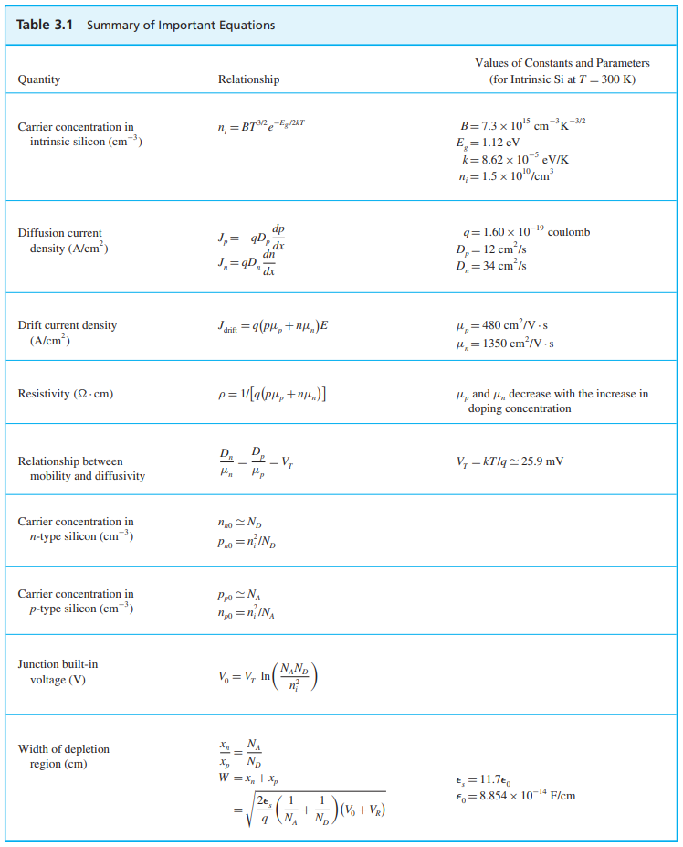

1a Semiconductor Physics

3.1a Calculate the value of ni for silicon at room temperature (T ≅ 300 K).
3.1b Calculate the intrinsic carrier density ni for silicon at T = 50 K and 350 K
3.2a Consider an n-type silicon for which the dopant concentration ND = 1017/cm3. Find the electron and hole concentrations at T = 300 K.
3.2 For the situation in previous Example 3.2, find the electron and hole concentrations at 350 K. You may use the value of ni at T = 350 K found in Exercise 3.1.
3.3a For a silicon crystal doped with boron, what must NA be if at T = 300 K the electron concentration drops below the intrinsic level by a factor of 106?
3.3b Find the resistivity of (a) intrinsic silicon and (b) p-type silicon with NA = 1016/cm3 . Use ni = 1.5 × 1010/cm3 , and assume that for intrinsic silicon μn = 1350 cm2 / V ·s and μp = 480 cm2 /V ·s, and for the doped silicon μn = 1110 cm2 /V ·s and μp = 400 cm2 /V ·s. (Note that doping results in reduced carrier mobilities.)
3.4 A uniform bar of n-type silicon of 2-μm length has a voltage of 1 V applied across it. If ND = 1016/cm3 and μn = 1350 cm2 /V ·s, find (a) the electron drift velocity, (b) the time it takes an electron to cross the 2-μm length, (c) the drift-current density, and (d) the drift current in the case that the silicon bar has a cross-sectional area of 0.25 μm2